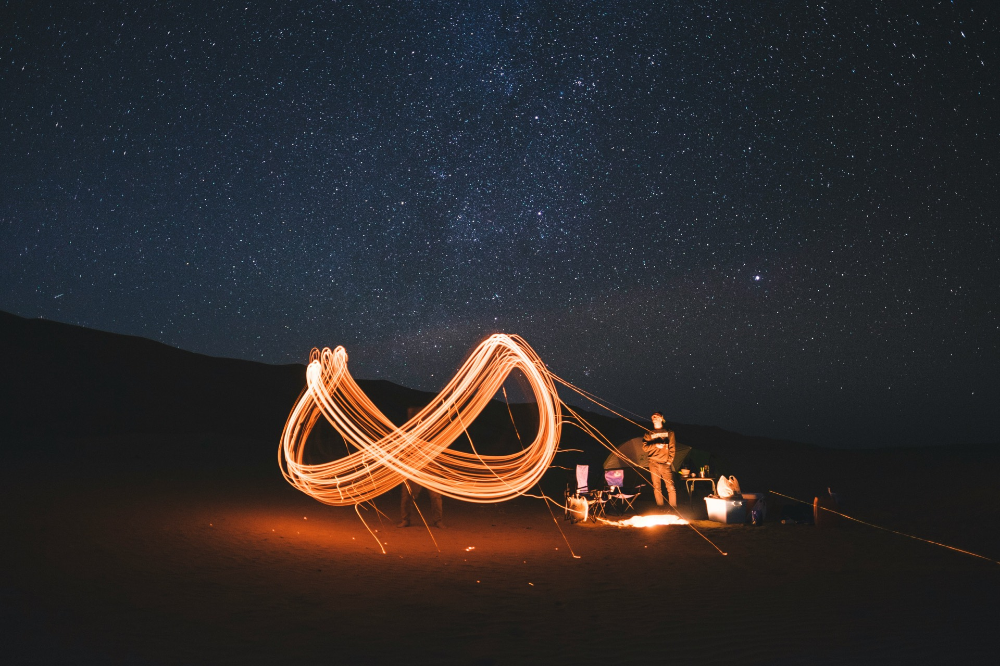

Combien de jours faut-il pour visiter Oman ?
Ce qui tient en 4, 6, 8 ou 11 jours, et comment choisir.

Oman est plus grand qu'il n'y paraît sur une carte, et ses plus beaux endroits sont éloignés les uns des autres : la capitale et la côte, les montagnes et les forts de l'intérieur, et le désert. La bonne durée dépend de ce que vous voulez voir sans courir de l'un à l'autre.
4 jours : Mascate et ses environs
Quatre jours suffisent pour une première découverte de la capitale : la Grande Mosquée, la corniche et le souk de Mutrah, la vieille ville de Mascate, une croisière avec observation des dauphins et snorkeling, et une journée libre. C'est le format de notre Muscat Escape.
6 jours : ajouter la côte et les wadis
Avec six jours, vous pouvez quitter Mascate et parcourir la route côtière : Wadi Shab, gouffre de Bimmah, Sour et son chantier naval de boutres, plus une halte à la plage d'Al Khairan. Voir notre Oman Coast Explorer et notre guide du Wadi Shab.
8 jours : montagnes, forts et nuit dans le désert
Huit jours ouvrent l'intérieur du pays : fort et souk de Nizwa, château de Jabreen, fort de Bahla, deux jours à Jabal Akhdar et une nuit en camp dans le désert du Wahiba. C'est l'itinéraire de notre Desert & Mountains Adventure.
11 jours : le voyage complet
Onze jours permettent d'associer côte, montagnes et désert à un rythme tranquille, avec du temps en plus pour une nuit de camping à Barr Al Hikman et un programme culturel plus complet. C'est notre Ultimate Oman Experience.
Comment choisir
- Première fois à Oman et peu de temps : 4 jours à Mascate, ou 6 jours pour ajouter la côte
- Vous voulez le désert et les montagnes : 8 jours est le minimum raisonnable
- Vous voulez voir tout le pays sans courir : 10 jours ou plus
- Vous voyagez en saison chaude : la saison change ce qui est agréable, voir quand partir à Oman
Chaque itinéraire peut être adapté, et toutes les durées sont possibles avec un voyage sur mesure.
Réponses rapides
Combien de jours faut-il pour Oman ?
Quatre jours couvrent Mascate, six jours ajoutent la côte, huit jours ajoutent les montagnes et une nuit dans le désert, et onze jours couvrent l'essentiel du pays à un rythme tranquille.
Puis-je modifier un itinéraire ?
Oui. Chaque itinéraire Wadi Escape est un point de départ : vous pouvez changer une activité, ajouter une journée ou construire un voyage entièrement sur mesure.
Guides associés
- Guide du Wadi Shab : accès, randonnée et baignade
- Meilleure période pour visiter Oman : météo et saisons
- Guide du Wahiba Sands : dunes, camps dans le désert et meilleure période
- Guide du Jabal Akhdar : la Montagne Verte d'Oman et Diana's Point
- Que faire à Mascate : Grande Mosquée, souk de Mutrah et vieux Mascate
Vous ne savez pas combien de temps rester ?
Indiquez-nous vos dates et vos envies, nous vous proposerons un itinéraire adapté.
Demandez votre devis gratuit →